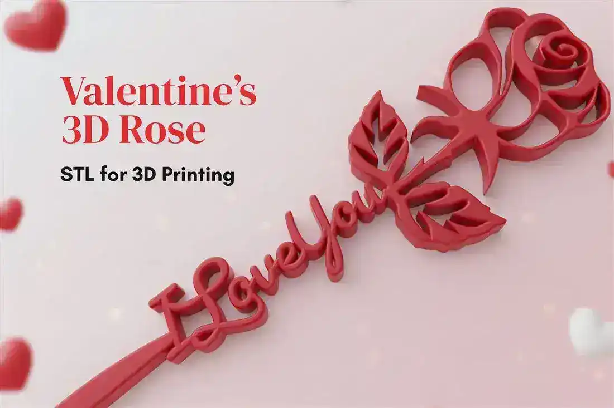
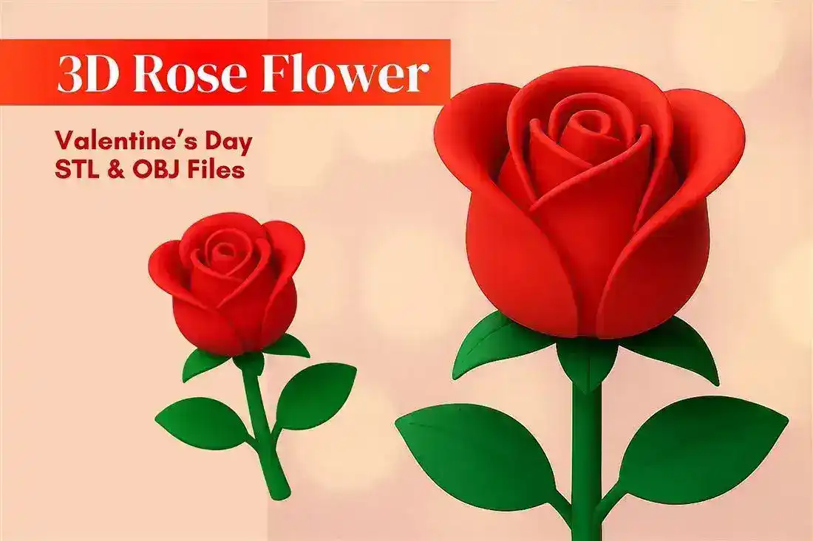
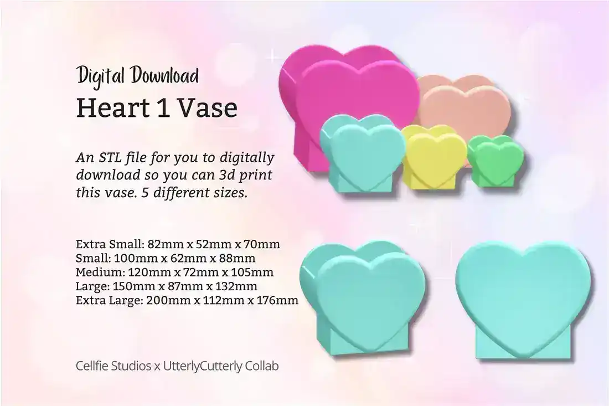
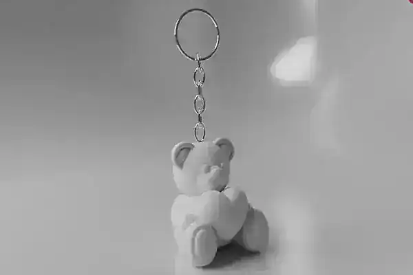
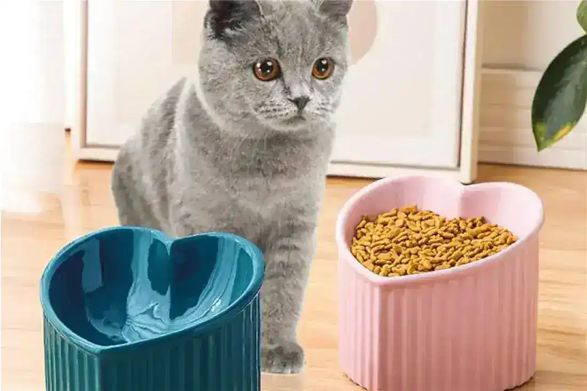
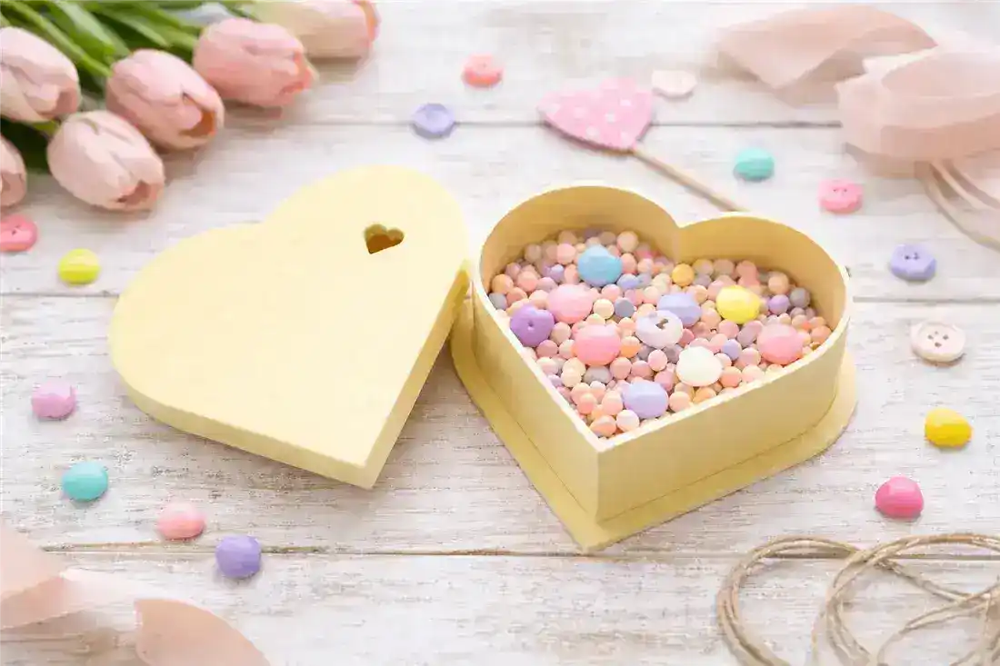
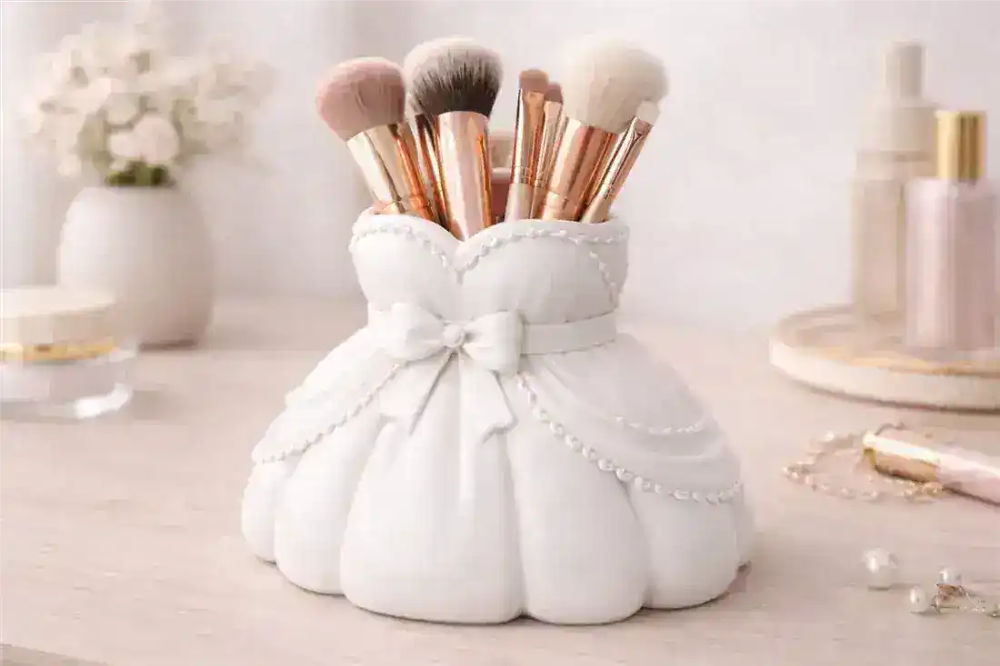
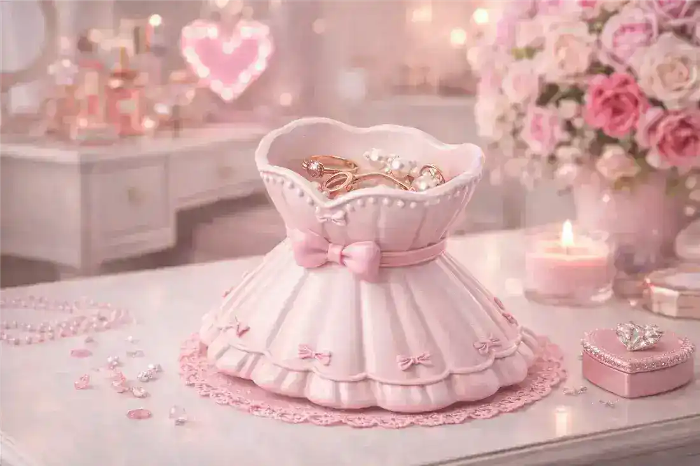
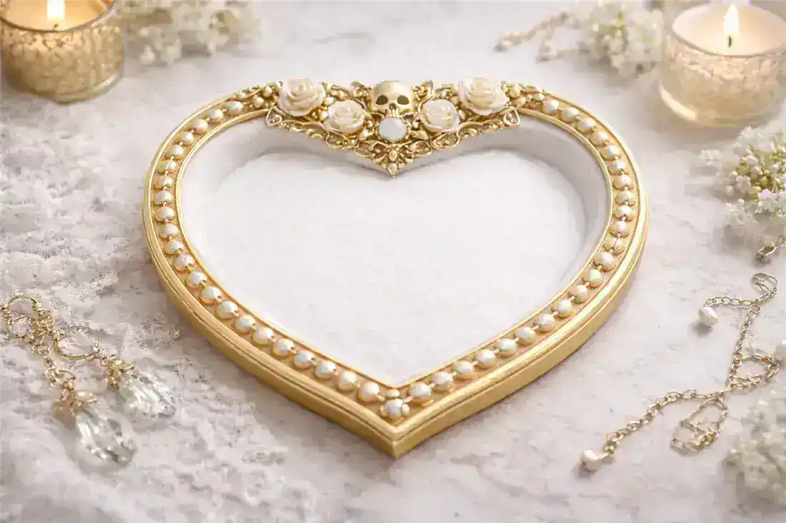

01 3D ModelI Love You Rose 3D Model
A layered rose that spells out the sentiment without a single word spoken. Print it in a deep red or blush and it reads as a keepsake rather than a throwaway gift.
A small but heartfelt set of prints for gifting and the vanity alike. The 3D roses never wilt, the heart dishes catch the little things, and the dress-shaped holders make a wedding morning feel like a photo. Keep it to one or two tones for a look that reads romantic, not busy.
9 printable models · direct links · free to browse№ 01 · The sentiment in filament form — never wilts.

01 3D ModelA layered rose that spells out the sentiment without a single word spoken. Print it in a deep red or blush and it reads as a keepsake rather than a throwaway gift.
№ 02 · Petal curves hold their shape from every angle.

02 3D ModelA spiraled rose with petal curves that hold their shape from any angle. It is a timeless little present that never wilts on the shelf.
№ 03 · One stem is all it needs to earn its shelf.

03 3D ModelA smooth heart-form vase that holds a few stems or stands alone as a love-letter to the room. It prints clean and looks lovely in a glossy finish.
№ 04 · Chubby bear, tiny heart, instant gift.

04 3D ModelA chubby bear clutching a heart, sized just right for a bag or keyring. It is a small, sincere gift that prints fast in a single color.
№ 05 · For the pet who actually runs the house.

05 3D ModelA food or water bowl with a gentle heart silhouette for the pet who runs the house. The rounded form prints sturdy and wipes clean.
№ 06 · The gift box that becomes the keepsake.

06 3D ModelA lidded heart box that hides rings, notes, or tiny treasures inside. It works equally well as a gift box and a permanent little keepsake jar.
№ 07 · Wedding-morning vanity, photo-ready.

07 3D ModelA brush holder shaped like a flowing gown, perfect for a bride's vanity or a wedding morning. It keeps tools upright and turns prep into a photo moment.
№ 08 · Rings go here at the end of the day. Every day.

08 3D ModelA gown-shaped dish that catches rings and earrings at the end of the day. It is a charming rest stop for the small things you never want to lose.
№ 09 · A love story with a darker chapter.

09 3D ModelA heart dish with shadowed, ornate edges for a love story with a darker streak. It suits a moody vanity and pairs well with antique brass accents.
Short, practical guides from the blog — the stuff worth knowing before your next print.